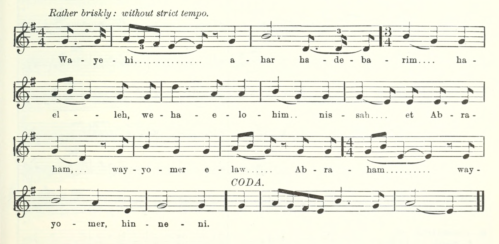
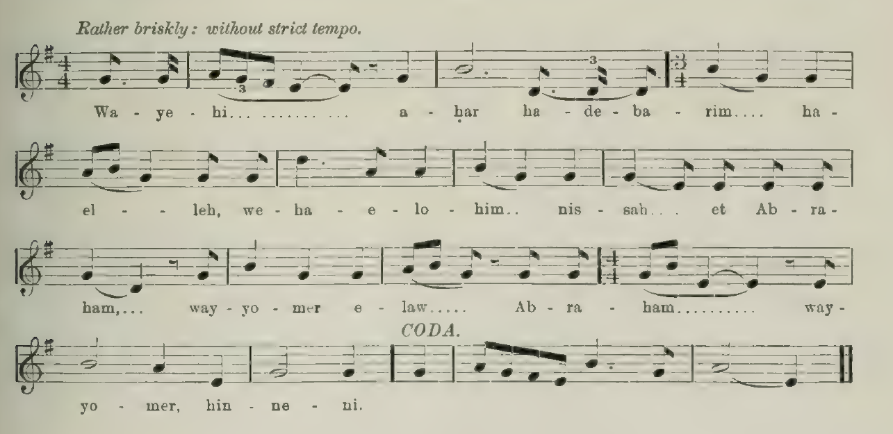
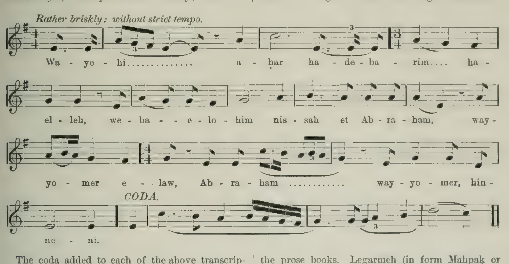
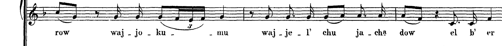
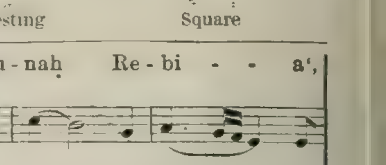

The practice workflow
Word, group, verse and span playback; repeat; independent pitch and speed; pointed and parallel views. Verified against the 2011 V5 manual, pp. 44–52.
A study in text & sound
Hear a phrase. Find your place. Make it your own.
TORAH · HAFTARAH · MEGILLOT
RECONSTRUCTION IN PROGRESS
Torah, Prophets & five scrolls
Choose a reading type and book. Text selection does not select a tradition or pronunciation.
Choose any range in Torah, Prophets or the five scrolls. Playback uses the explicitly selected musical source; the PocketTorah recorded-reference library covers Torah only.
Torah · 1 section
Saved sections carry their melody and display preferences. Your tempo, transposition and comfort range stay personal.
Choose a Gregorian month and Israel or Diaspora schedule. Hebrew service dates, weekday and festival readings come from Hebcal.com, CC BY 4.0. Triennial divisions follow Hebcal’s CJLS-based schedule; congregational practices can differ.
Dates refer to the named civil day’s service. For an evening, choose the following civil service date. Conversion works offline; new reading months may need internet.
Your browser’s Hebrew calendar supplies local date conversion, checked against Hebcal’s attributed conversion data. Supported civil dates are proleptic Gregorian years 1–9999; the first and last Hebrew years are partial. Local historical adoption of the Gregorian calendar is not inferred. Evening boundaries are chosen manually; no sunset time or location is calculated.
Date conversion evidence · Pinned original comparison data · CC BY 4.0
Choose Load month, or try one of the bundled examples. Your open reading stays available.
Load month first uses saved or bundled data. Other months and Refresh contact Hebcal with the chosen month and Israel/Diaspora flag. Up to 12 loaded month responses are saved on this device for offline use. Eight source examples are bundled. No location is requested. A civil date identifies the named day’s service; evening/sunset conversion is not calculated here.
Opening a reading checks each structured source range and verse count against UXLC. Related haftarah variants select text boundaries only. Consecutive Megillah units can form one tutor section; all source units and notes are retained with it. Partial or ambiguous verse boundaries remain reference-only. Maftir remains a separate occurrence, even when it repeats earlier verses. Melody, pronunciation, key and speed stay separate. Calendar selection adds no special cadence or traditional preset.
Calendar provenance and source examples · Haftarah/Megillah reference checks and limits · Torah source/UXLC numbering evidence · Numbering map · CC BY-SA 4.0This original motif tests the practice workflow. It is not a historical cantillation melody. Syllable divisions are drafts awaiting review.
Torah · practice reader
Pronunciation text under the words is hidden.
Text follows the preferred reading. Combined or missing source forms stay labeled. This display does not generate a singing voice.
Click a word to begin. Shift-click another word to select a span. Double-click to hear one word.
Sourced scroll lines are loading.
The pointed reader and consonantal practice follow the source’s preferred reading. Written forms remain separate here, including words written but not read and read but not written. Click a reading word to select it. No word-to-syllable correspondence is inferred.
Line and gap positions follow Akiva Gordon’s tikkun.io 245-column data, under MIT. Written letters come from this app’s exact UXLC edition; its qere reading words remain separately selectable in the pointed pane. Spelling and word-division differences are flagged. Excerpts omit words outside the displayed reading window. This is a typeset practice view; widths are approximate, scrolls vary, and it is not a manuscript facsimile.
The unchanged Shlomo Stam font by Shlomo Orbach derives from Ezra SIL SR, under OFL 1.1, supplied by Open Siddur. Its shapes do not establish a kosher scroll or any musical tradition.
Exact source, font and license record · Pinned layout source pack · Layout MIT license · Font OFL license
At the cursor
Accent in source text
This choice changes the source transcription only. Recordings keep their original pronunciation. These source labels are separate from Kinnor’s historical Accent presets.
Compare the marked reader, primary written form and documented source reading for וּמְחִיּיָאֵ֗ל. The extra written yod has no assigned syllable or sound. Exact source rule and correspondence · Original rule reference · GPL3
Source stress and superscript marks are retained. Hebrew syllable underlay follows the source computation, with shared consonants marked explicitly. Written Hebrew keeps its original letters and accents; no new phonemes, syllable timing or sung voice is generated.
Phonetic MAM distinguishes consonants, vowels, silent signs and shared consonants before projecting each transcription style. These are source categories, not reviewed acoustic phonemes. Hebrew letters and accents remain unchanged; syllable ownership follows the existing checked ranges. Both original style values are shown, including alternatives. No IPA, new singing voice or equivalence to Kinnor’s six Accent presets is inferred.
Source categories, rules and provenance · Complete reconstruction and alignment audit
Units follow the source’s middle dots, hyphens and spaces. Primary stress follows its explicit stress markup; acute marks, breve marks and superscript e stay literal. Computed underlay shows exact written clusters where correspondence is clear; otherwise it keeps source Hebrew. Independent linguistic review is pending.
The study file retains both styles, exact source cells and marked Hebrew. Computed source slices, exact written Hebrew ranges and source category plans for both transcription styles are included, with explicit shared-consonant references. Phonemes, note links and audio times remain unassigned.
Source: Hebrew Wikisource · Miqra according to the Masorah, Phonetic MAM by Benjamin Denckla. CC BY-SA 4.0. Attribution and limits · Complete correspondence audit · Explicit written/read variant evidence · Primary edition word correspondence · Primary MAM edition and reuse terms · Original source pack · Hebrew underlay source audit · Computation source · GPL3
C: conjunctive. D1–D4: source-guide disjunctive levels. Frames follow the pointed source in every view. Context-dependent combinations are marked separately.
Names and prose classes follow the source guide. A complete contextual hierarchy and musical realization still require review. Positions below count encoded source characters, including combining marks.
| Sign | Code | Name | Class / role | Position |
|---|
Maqaf joins are retained as units. Repeated positional signs are grouped for search; every original sign remains in Inspect source signs. C* → D means zero or more conjunctives followed by a disjunctive. This is adjacent-sign context, not a full hierarchy or a melodic rule.
Wickes 1887 · primary reference, pp. 9–12Find words with a sign in this reading or across the Torah. Go to word opens the example and keeps your key, speed and volume.
Find adjacent accent patterns in qualified source units. Each example selects whole words, including maqaf joins. Your musical source, key, speed and volume stay selected. Cases needing interpretation are excluded. Selection does not start playback.
Patterns are derived from this edition’s C* → D source runs, including shorter suffixes. This is a source lookup chart; it is not a reconstruction of Kinnor’s approximately 70-combination teaching chart or a set of playable traditional motifs.
Open to build the chart from the local Torah text.
Named readers · reusable sources
Seventy original performances: 64 Rosh Hashanah verse recordings, Torah and Esther cantillation tables, and four paired Tiberian pronunciation studies of Genesis 1:1–13. Select the published pronunciation reading and recorded delivery separately. Each take keeps its own pitch, pace and voice.
· · Original performance source
The seconds span is your listening selection. These recordings have no reviewed word or syllable timings here. Spoken studies are labeled without melody; the recorded chant is a separate delivery.
The Tiberian recordings are Alex Foreman’s performances published with Geoffrey Khan’s 2020 study, §I.5.4.1. They illustrate two reconstructed dagesh readings, each with and without the source’s “Sefardi melody.” They are not identified as Kinnor Accent realizations. Gabriel Kretzmer Seed’s 2011 Esther table is shared by the Open Siddur Project as Nusaḥ Ashkenaz.
Isabel Bard’s 2021 Torah table is identified as Western Ashkenazi by its archive, under CC BY-SA4.0. All original audio files are unchanged. No pitches, phoneme rules, syllable alignment or Bible-word timing are inferred. An independent transcription and qualified review are needed before these performances can become word-aligned or synthesized presets.
The 2018 Rosh Hashanah document adds 64 unchanged Hebrew verse recordings, with a separately uncredited performer. It covers Genesis 21, Genesis 22 and Numbers 29:1–6. These are distinct from the 2019 Len Fellman performances; no new pronunciation grammar or full melody system is inferred.
The Esther table and Genesis 22:1 verse clip are included. Other originals load only on request and are verified before playback. Saved copies work offline when device storage is available. The standalone file loads optional recordings from the published trainer.
Source catalog, rights and review record · Full recording attribution
Selected original SHA-256:
Mark the original recording against unchanged reader words. Every interval remains a personal draft: source-edition comparison, syllable times, phonology and musical notes require review. Pronunciation text styles do not change these recordings or times.
This source has no Bible-word mapping.
·
Sourced recordings
Loading the recorded-reference catalog…
Unmodified chant from PocketTorah Audio Files, Not-a-Box Media Lab · Russel Neiss & Rabbi Charlie Schwartz. The source describes Avery–Binder style; individual readers are not identified per file. Audio and derived alignment: CC BY-SA 3.0.
Each take retains its recorded key, tempo and pronunciation. Instrument controls affect the selected instrumental source above. Word timings come from the source and await acoustic review. The optional pitch measurements below are separate from the instrumental score; no syllable timing or pronunciation grammar is assigned.
Choose a Hebrew word in the reader. Measurements for its recording load on demand; the standalone download includes all measurement packets. Points show automatically estimated fundamental frequency in the original recording, using a fixed-window YIN-derived measurement. Empty intervals are unassigned frames, not musical rests. Periodicity scores are not probabilities of a correct musical note.
This evidence does not change the Hebrew, accents, pronunciation text, selected melody, range, key or tempo. It is not a reviewed score, melody grammar or independently pronounced singing voice. No syllables or phonemes are timed. The source describes Avery–Binder style; these estimates do not establish a tradition identity. Use Play reference span to hear the unchanged source recording. Measurement method, source checks and review limits · Direct source-frame audit · Measurement adaptation: CC BY-SA 3.0.
Joint chanting and pronunciation coverage evidence
Exact coverage audit. Opening a gap does not start playback. Complete takes remain available without timed highlighting.
The reference covers all 54 portions in 378 original recordings. Eight timing files have count or ordering errors; their complete takes remain available without timed word highlighting. The catalog identifies those records instead of guessing boundaries. Other spans can cross recordings and repeated assigned sections.
The recording text is WLC 4.14 as distributed in 2012; the practice reader retains UXLC 2.6. Chapter letter sequences match, but marks, verse numbering and one word boundary differ. Both exact sources and original word parts are retained. Numbering differences in the Decalogue are explicit. No source text is silently replaced.
Load downloads only the recordings needed for your choice, verifies their original checksums and saves them on this device when possible. Complete-recording playback includes the original opening and closing sound. Timing metadata follows the creator’s 2012 release under CC BY-SA 2.5. The derived comparison and reference adaptation are CC BY-SA 3.0. Attribution and source checksums.
A published musical source
Francis L. Cohen’s 1902 Jewish Encyclopedia example, vol. III, p. 539, prints an ordinary Pentateuchal chant. This study transcribes all 13 words of Genesis 22:1: 52 printed note components, including two tied pairs, and four rests. Tied components sound as one held note. The separate untexted coda is excluded.
Compare the printed Munaḥ–Revia pattern table
The source marks flexible timing; playback regularizes its printed durations to your tempo. The source key is retained at transpose 0, with modern 12-tone tuning. Hebrew underlay is a source-preserving draft, not a pronunciation profile. Independent transcription, underlay and musical review remain pending. No melody rules for other verses or coda syllables are inferred.
The printed Hebrew and musical underlay identify Genesis 22:1; the article prose inconsistently says “Gen. xxix.” All four systems are transcribed before CODA. Printed bars balance, including the pickup and complementary final bar. A small ring between pickup notes in one scan is absent from the independent copy; it is not treated as a pitched note.

Independent copy of the same printed page:

Alternate volume scan; PDF page 577 is printed page 539. The second image is a crop of that rendered page.
Original publication: public domain. Scan provenance and rights · Verse transcription and evidence record. New transcription: CC0.
The same words in another setting
Cohen’s 1902 article, p. 547, imagines the same Genesis 22:1 verse as if it were part of a reading from the Prophets. This printed comparison is a Torah verse in a hypothetical musical setting. It supplies 51 note components, 50 attacks, five eighth rests, one tied pair, seven slurs and three tuplets. It does not supply a complete melody grammar or an actual Haftarah passage.
Compare the ordinary Torah settingAll13Hebrew words and accents are kept. Melody, pronunciation text style, key, range and tempo are independent. Printed durations use your quarter-note tempo; expressive timing, modern tuning and instrument articulation are approximate. The separately labeled untexted coda is excluded. Musical and Hebrew-underlay review remains pending; no singing voice is added. The article’s prose says Gen. xxix., while the actual text identifies Genesis 22:1; this source discrepancy is retained.

Compare the second faithful page scan · Exact transcription, source and review limits
A worked Torah melody
Abraham Baer’s third expanded edition [1894], p. 210, No. 939 prints this complete example after its Sephardic accent table. The contents credits Nos. 937–943 to S. Naumbourg’s Agudas Schirim. The 52 Hebrew words retain every original UXLC letter and accent.
145 distinct notes, one eighth rest, two triplets and six fermatas. Playback regularizes the printed durations to your tempo; fermata hold lengths remain unspecified. Slurs keep separate attacks. Modern equal temperament is approximate. The two pronunciation text styles stay independent of the melody, key, range and speed; mismatched syllable spans remain unlinked.
This is a complete printed example, with independent musical and Hebrew-underlay review pending. Its section label does not identify a Kinnor preset or establish rules for other verses. No singing voice is added.

Source-note and Hebrew underlay evidence · Exact pronunciation note-span audit · Nineteenth-century print public domain; new transcription CC0. Scan: Universitätsbibliothek Johann Christian Senckenberg, Frankfurt am Main; digitization policy. This edition differs from the 1877 edition cited by Cohen.
A texted High Holiday example
Baer’s third expanded edition [1894], No.113, prints this complete verse across pp.37–39 in its High Holiday section. All14Hebrew words and accents are kept, with46notes, two tuplets, seven slurs and five rests. The final eighth rest is included in playback, repeats and exports.
The first unequal triplet and its slur span אֶל־ and the opening of נְעָרָ֔יו. Printed B-natural and E-flat retain their original pitches. Written durations use your quarter-note tempo; expressive timing, tuning and instrument articulation are approximate. The two pronunciation text styles stay independent of melody, key, range and speed. Independent musical and Hebrew-underlay review remains pending; no singing voice, full melody grammar or Kinnor preset is inferred.
For a separate recorded reference, choose Voice studies → Rosh Hashanah · 2018 source verse recordings → Genesis22:19. That recording keeps its own melody and pronunciation; equivalence to this score has not been established.
Library edition and complete book · Exact notes, lyric fragments, source crops and review record



Printed accent patterns
Cohen’s 1902 chart compares six ordinary Pentateuch traditions. This study includes thirty-two checked figures across pp. 540–543: plain Munaḥ/Revia, Yetib/conditional Zaqef, and the continued Munaḥ–Etnaḥta group, with source rows selected independently. Contextual melody systems and Kinnor preset equivalence remain pending.
The column headings name accents; they do not specify complete Bible-word or syllable underlay. This study leaves those fields empty and does not change your reading’s musical source. Timing is regularized; modern tuning and instrument articulation are approximate. Independent musical and transcription review remain pending.
Instrument tempo, transpose, volume and repeat controls
Ready to compare the printed notes.
Unretouched rendered crop of printed page 540, row A. The headings and notes belong to the source; no Hebrew syllable allocation is inferred. The new staff above is a separate engraving of the transcribed events.

Open full-resolution selected columns
Printed continuation on p.543. The source group begins on the preceding page; both page images retain the exact notation.
The context image below retains the original source row labels and keys. Other columns are reference material.

Open full-resolution source row
Primary article · Exact source record and limits · 1902 source public domain; new note transcription CC0.
The same notes you hear
The staff, note list and exports use the playback sequence. This is the original instrumental demonstration with unreviewed Hebrew syllables.
Click a note to go to its Hebrew word. Each accidental is explicit. The demo’s 0.6 and 0.9 beats use individual 5:3 quarter-note tuplets; lengths are also written below. Lines under the lyrics continue one syllable across several notes.
Text appears where the pronunciation unit matches the score’s Hebrew syllable exactly. Different syllable divisions stay unlinked on individual notes; compare their common Hebrew spans below. Bold text marks the pronunciation source’s explicit stress; shared consonants and alternatives remain explicit. Notes, Hebrew syllables and recordings keep their own settings; no singing voice is generated. Pronunciation-to-score correspondence audit
Pronunciation style is independent of melody, range, key and tempo. Shared Hebrew spans preserve both sets of syllables, accents and original source alternatives. This comparison assigns no phonemes or singing times. Full Torah structural audit
WAV uses the current instrument volume. MIDI contains notes; its timbre depends on the player. Exports contain one pass through the selected span. No singing or blessings are added.
Repeated syllables in this list identify notes of the same melisma.
| Word ID | Hebrew syllable | Note | MIDI | Beat | Beats | Seconds |
|---|
An independent reconstruction
This independent reconstruction follows the documented teaching workflow of Kinnor’s desktop TropeTrainer. It does not reproduce Kinnor’s recordings, synthesis engine or musical repertoire.
Read the evidence map & full roadmapProphets and five-scroll text provenance · Source correspondence audit
Word, group, verse and span playback; repeat; independent pitch and speed; pointed and parallel views. Verified against the 2011 V5 manual, pp. 44–52.
Newly composed pitches and draft syllabification. Group guides mark selected major divisions, not the complete accent hierarchy. Optional sourced scroll lines use written UXLC letters, a licensed scribal font and flagged edition differences. Typeset widths remain approximate; scrolls vary.
PocketTorah recordings and the bounded printed-score study provide source references. Independent melody rules, syllable-aligned transcription, named-reader attribution for this file and pronunciation review remain pending. Historical menu labels alone do not establish musical realizations.